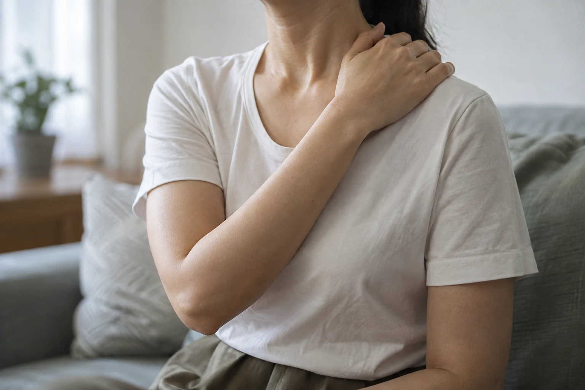

DEAR JOURNAL / AUTONOMIC NERVOUS SYSTEM
스트레스가 끝났는데,
몸은 왜 계속
긴장하고 있을까.
두근거림 · 불면 · 열감 · 다한증 · 소화불량
불편한 증상에 시간을 붙이면 진료의 질문이 달라집니다. 디어한의원이 자율신경을 살피는 방법에 대하여.
THE HOURS THAT TELL YOUR STORY
01 A DAY OF SYMPTOMS
일은 끝났는데, 긴장은 남아 있는 하루.
스트레스를 받으면 교감신경 활동이 증가합니다. 심박과 혈압이 올라가고 근육에 힘이 들어갑니다. 당장의 상황에 집중하고 대응하도록 돕는 정상적인 생리 반응입니다.
그런데 긴장할 상황이 끝난 뒤에도 심장이 계속 뛰고, 밤이 되어도 잠들기 어렵고, 열이 오르거나 땀이 나는 불편이 이어진다면 어떨까요. 그때부터는 증상이 반복되는 시간과 조건을 구체적으로 살펴야 합니다.
이 시간표는 증상을 기록하는 방법을 설명하기 위한 예시입니다.
- MORNING자고 일어났는데 개운하지 않다.
- AFTERNOON얼굴이 뜨거워지고 땀이 난다.
- EVENING피곤한데 목과 어깨에는 계속 힘이 들어가 있다.
- BEDTIME누우면 심장 박동이 더 크게 느껴진다.
- AFTER MIDNIGHT잠에서 깨고 다시 잠들기 어렵다.

02 THE DEAR QUESTION
디어한의원에서는 ‘언제’를 묻습니다.
불면이면 수면시간만, 두근거림이면 심박수만, 다한증이면 땀의 양만 기록하지 않습니다. 몇 시에 시작되고 얼마나 지속되는지, 누웠을 때와 움직일 때 어떻게 달라지는지 묻습니다.
또 하나는 ‘무엇이 함께 움직이는가’입니다. 심박, 호흡, 체온, 발한, 위장관 운동, 수면에는 모두 자율신경이 관여합니다. 서로 관계없어 보이는 불편도 같은 날, 같은 상황에서 달라지는지 확인합니다.
03 ACTIVATION & SETTLING
얼마나 올라갔는가보다, 언제 내려오는가.
운동, 시험, 발표, 중요한 업무를 할 때 교감신경은 필요합니다. 긴장되는 순간에는 심박이 올라갈 수 있지만, 상황이 끝난 뒤에는 다시 낮아져야 합니다. 부교감신경은 심박을 낮추고 소화 활동을 돕는 등 이 조절 과정에 함께 관여합니다.
낮에는 필요한 일에 집중하고 밤에는 잠들 수 있는가. 디어가 확인하는 것은 하루 중 한 번 측정한 숫자만이 아닙니다. 치료 목표도 ‘교감신경 억제’라는 한 문장으로 정하지 않습니다.
04 FROM STIMULUS TO REGULATION
피부에 놓은 침은 어떻게 자율신경과 연결될까.
침은 피부와 근육을 자극하지만, 그 감각 정보는 자극한 부위에만 머물지 않습니다. 감각신경을 통해 척수와 뇌로 전달되고, 자율신경 조절에 관여하는 신경망과 연결됩니다.¹
05 WHAT THE HEARTBEATS TELL US
박동과 박동 사이, 미세한 차이를 읽습니다.
심장은 일정하게 뛰는 것처럼 보여도 매 박동 사이에는 미세한 시간 차이가 있습니다. 호흡과 긴장, 교감·부교감신경 활동이 이 차이에 영향을 줍니다. 심박변이도, HRV는 이 간격의 변화를 분석하는 방법입니다.
박동 간격의 이해를 돕는 예시이며 실제 검사 결과는 아닙니다.
침 치료 전후의 HRV 변화
9개 무작위 대조시험을 분석한 연구에서 실제 침 치료군의 치료 전후 HF와 LF/HF 변화가 유의하게 나타났습니다. HF는 호흡과 연관된 심박의 변동을 보는 지표입니다.
전체 박동 간격의 변동, SDNN ↑
744명이 포함된 10개 무작위 대조시험의 메타분석에서는 침 치료 후 SDNN의 유의한 증가가 보고됐습니다. SDNN은 정상 박동 간격이 얼마나 다양하게 변하는지를 나타냅니다.
이 연구들이 진료에 주는 의미는, 치료 후 느끼는 변화를 주관적인 느낌 외의 지표로도 살펴볼 수 있다는 데 있습니다. 심장 박동 사이의 시간 차이를 통해 자율신경 활동의 일부를 측정하는 것입니다. 실제 진료에서는 수면, 두근거림, 일상의 불편이 함께 달라졌는지를 확인해야 합니다.
HRV는 호흡·자세·측정 시간과 부정맥 등의 영향을 받습니다. 수치 하나로 자율신경 상태를 진단하거나, 연구의 평균 결과를 개인의 치료 효과로 해석하지 않습니다.
DEAR CLINICAL RECORD
밤의 두근거림이 다음 날의 피로가 될 때.
30대 여성 / 두근거림 · 숨 답답함 · 불면 · 만성피로
병원 검사에서 부정맥과 빈맥을 진단받았고, 경과를 보다가 증상이 더 심해지면 약물치료를 시작하기로 한 상태였습니다. 하지만 일상의 불편은 컸습니다. 특히 밤에는 몸이 피곤한데 심장 박동이 크게 느껴져 잠들기 어려웠습니다.
잠이 부족해 낮에는 피로가 심했고, 밤에는 다시 두근거림 때문에 잠을 이루기 어려웠습니다. 디어에서는 심장이 얼마나 빨리 뛰는지만 묻지 않고, 잠자리에서 시작해 다음 날까지 이어지는 불편을 기록했습니다.
언제, 얼마나 오래 뛰는가
두근거림의 시작 시간과 지속시간, 누웠을 때의 변화, 잠드는 데 걸리는 시간을 확인했습니다.
한약 + 침 치료 2개월
야간 각성과 다음 날 피로를 함께 기록했습니다. 기존 부정맥·빈맥의 검사 결과와 경과 관찰 계획도 진료에서 확인했습니다.
두근거림 감소, 불면 소실
두근거림이 눈에 띄게 줄었습니다. 급격한 스트레스를 받거나 긴장이 심할 때 간헐적으로 가벼운 두근거림이 남았지만, 일상에 불편을 줄 정도는 아니었습니다. 불면도 없어졌으며, 환자는 현재 전반적인 컨디션이 많이 좋아졌다고 설명했습니다.
치료 반응은 개인마다 다를 수 있습니다. 구체적인 치료 과정과 예상되는 결과는 원장님과 상담하시기 바랍니다.
DEAR CLINICAL RECORD
더워서 나는 땀과 시험지를 적시는 땀은 같지 않습니다.
10대 남학생 / 갑작스러운 열감 · 수족다한증
갑자기 열이 오르면서 땀이 흐르는 증상으로 내원했습니다. 진료 과정에서 태어날 때부터 손발의 땀이 심했다는 사실을 확인했습니다. 시험을 보면 손땀 때문에 시험지가 젖어 찢어지거나 글씨가 보이지 않아, 시험지를 여러 장 교체하며 시험을 치렀습니다. 발땀이 심해 하루에 양말 네 켤레를 갈아 신었습니다.
젖어서 찢어지거나 글씨가 보이지 않는 시험지. 여러 장을 교체하며 시험을 치렀습니다.
발땀 때문에 갈아 신던 양말.
학교에 챙겨갈 짐이 늘었습니다.
손바닥과 발바닥에는 에크린 땀샘이 많이 분포하며, 교감신경의 지배를 받습니다.⁴ 손발의 발한은 주변 온도뿐 아니라 정신적 긴장에도 민감합니다. 시험이나 발표처럼 긴장도가 높아질 때 손발의 땀이 급격히 늘어나는 ‘정서성 발한’도 살펴야 하는 이유입니다.
어디에서 나는 땀인가
손, 발, 얼굴 중 어디에 두드러지는지, 생활에서 무엇을 가장 불편하게 만드는지 구분했습니다.
더울 때인가, 긴장할 때인가
열이 먼저 오르는지 땀이 먼저 나는지, 자는 동안에도 땀이 나는지를 확인했습니다.
한약 3개월 복용 후
시험을 볼 때 더 이상 시험지가 젖지 않았고, 하루에 양말 네 켤레씩 갈아 신지 않아도 됐습니다.
A CHANGE IN EVERYDAY LIFE
시험지를 끝까지 편하게 쓸 수 있는가. 여분의 양말을 몇 켤레 챙겨야 하는가.
학생은 이 변화를 웃으며 이야기했습니다. 디어가 치료 후 확인한 것은 막연한 땀의 양이 아니라, 시험을 치르고 학교에 다니는 동안 달라진 구체적인 불편이었습니다.
개인을 식별할 수 있는 정보는 제외한 개별 진료 사례입니다. 환자가 설명한 생활 변화를 기록했으며, 모든 환자에게 동일한 결과나 치료 기간을 보장하지 않습니다.
06 THE DEAR METHOD
증상의 시간표를 쓰고, 같은 항목을 다시 봅니다.
‘요즘 좀 괜찮으세요?’라는 질문만으로는 무엇이 달라졌는지 알기 어렵습니다. 처음에 기록한 항목이 있어야, 치료를 이어갈지 조정할지 판단할 기준도 생깁니다.
디어한의원은 진찰과 병력, 복용약을 확인한 뒤 침 치료와 한약 치료의 필요성을 정합니다. 이후에는 증상이 줄었는지와 함께, 그 증상 때문에 못 했던 일을 다시 할 수 있는지도 살핍니다.
- 시간몇 시에 시작되는가
- 지속시간몇 분, 몇 시간 동안 이어지는가
- 조건누울 때, 식후, 시험 직전인가
- 동시 증상잠·심박·열감·땀·소화가 함께 달라지는가
- 전후 비교치료 전과 같은 항목이 어떻게 달라졌는가
BEYOND “IT IS STRESS”
스트레스 때문이라는 말은 진단도, 치료도 아닙니다.
스트레스를 받지 않고 살 수는 없습니다. 같은 업무와 같은 시험을 치르더라도 밤까지 심장이 뛰어 잠들지 못하는 사람이 있고, 손에서 흐르는 땀 때문에 시험지가 젖는 사람이 있습니다.
디어한의원은 스트레스의 크기를 재는 대신, 스트레스가 이 환자의 심박, 수면, 체온, 발한, 소화에 구체적으로 어떤 변화를 만드는지 확인합니다. 치료 후에도 동일한 항목을 다시 묻습니다. 그 비교가 다음 진료의 출발점입니다.
07 QUESTIONS & ANSWERS
조금 더 궁금한 것들.
자율신경과 스트레스,
그리고 첫 진료에 대하여.
스트레스를 받으면 왜 심장이 두근거리나요?
긴장되는 상황에서 교감신경이 활성화되면 심박이 빨라지고 박동을 더 강하게 느낄 수 있습니다. 상황이 끝난 뒤 얼마나 오래 지속되는지, 누웠을 때 달라지는지 함께 기록하면 진료에 도움이 됩니다. 반복되는 두근거림은 스트레스로만 단정하지 않고 부정맥, 갑상선 질환, 빈혈, 약물 등의 가능성도 확인합니다.
스트레스가 심하면 불면과 소화불량이 같이 생기나요?
스트레스 반응은 수면과 위장관 운동, 내장 감각에 함께 영향을 줍니다. 그래서 긴장한 날 잠들기 어렵고 식후 불편도 심해지는지 확인합니다. 두 증상이 함께 나타나더라도 모두 같은 원인이라고 판단하지 않고, 식사 시간과 음식, 기존 질환과 복용약까지 살핍니다.
자율신경 불균형에는 어떤 증상이 나타나나요?
두근거림, 어지럼, 열감, 발한 변화, 소화 불편과 수면 문제가 동반되기도 합니다. 다만 ‘자율신경 불균형’이라는 표현만으로 특정 질환이 확정되는 것은 아닙니다. 증상의 시작 시점과 반복 조건, 진찰과 필요한 검사를 통해 원인을 구분해야 합니다.
침 치료는 자율신경에 어떻게 작용하나요?
피부와 근육의 침 자극은 감각신경을 통해 척수와 뇌로 전달되며, 자율신경 조절에 관여하는 신경망과 연결됩니다. 임상 연구에서는 침 치료 전후 심박변이도(HRV)의 변화를 측정하기도 합니다. 진료에서는 이런 연구 근거와 함께 실제 수면, 두근거림, 생활 불편의 변화를 살펴 치료 반응을 판단합니다.
자율신경 문제로 한의원에 가기 전에 무엇을 기록하면 좋나요?
증상이 시작되는 시간, 지속시간, 직전에 하던 일, 함께 나타난 증상을 적어보세요. 잠든 시간과 깬 시간, 카페인 섭취와 복용약도 함께 알려주시면 좋습니다. 기존 검사 결과가 있다면 가져오셔도 됩니다.
디어한의원의 자율신경 치료는 어떻게 진행되나요?
먼저 증상의 시간과 조건, 수면·발한·소화 등 함께 달라지는 항목을 기록하고 진찰과 병력을 확인합니다. 이를 바탕으로 침 치료와 한약 치료의 필요성, 치료 목표와 경과 확인 항목을 정합니다. 치료 후에는 처음과 같은 항목을 비교해 다음 치료를 결정하며, 치료법과 기간은 환자에 따라 달라집니다.
References
- Li YW, Li W, Wang ST, et al. The autonomic nervous system: A potential link to the efficacy of acupuncture. Front Neurosci. 2022;16:1038945.
- Hamvas Sz, Hegyi P, Kiss Sz, et al. Acupuncture increases parasympathetic tone, modulating HRV: Systematic review and meta-analysis. Complement Ther Med. 2023;72:102905.
- Ma YZ, Zhang PY, Du T, et al. Clinical efficacy and safety of acupuncture in modulating autonomic nervous function: a meta-analysis of randomized controlled trials. Front Neurosci. 2025;19:1694110.
- Shibasaki M, Crandall CG. Mechanisms and controllers of eccrine sweating in humans. Front Biosci (Schol Ed). 2010;2:685–696.
YOUR NEXT STEP
내 증상의 시간부터 기록해보세요.
언제 시작됐는지, 무엇이 함께 불편했는지.
그 기록을 가지고 오시면, 진료에서 함께 확인하겠습니다.
DEAR KOREAN MEDICINE CLINIC
디어한의원
서울 서초구 사임당로 1433층 309호, 310호